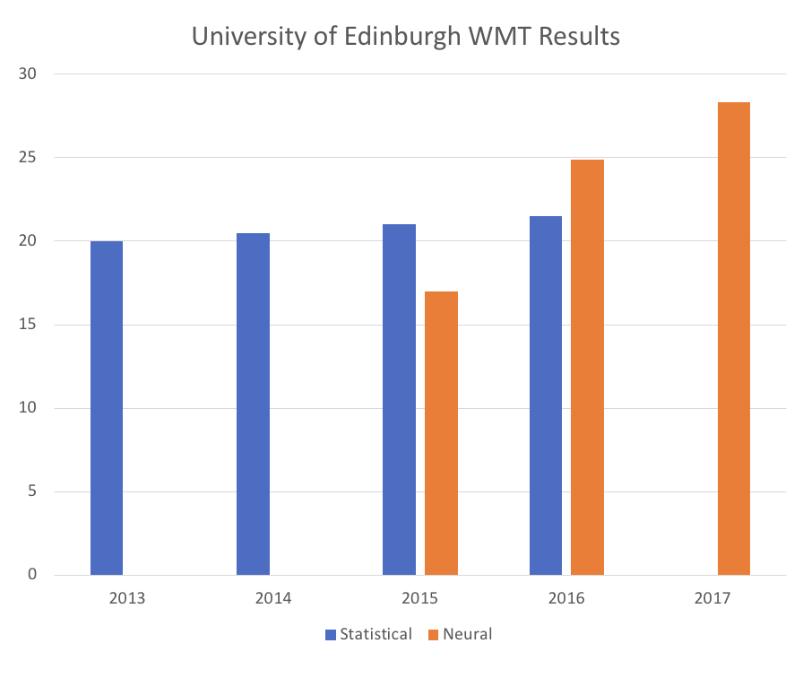
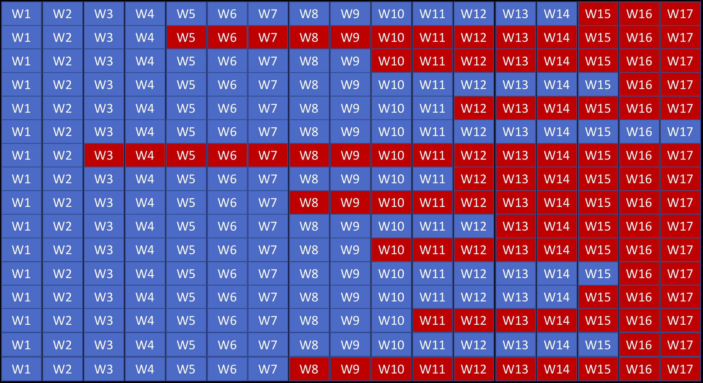
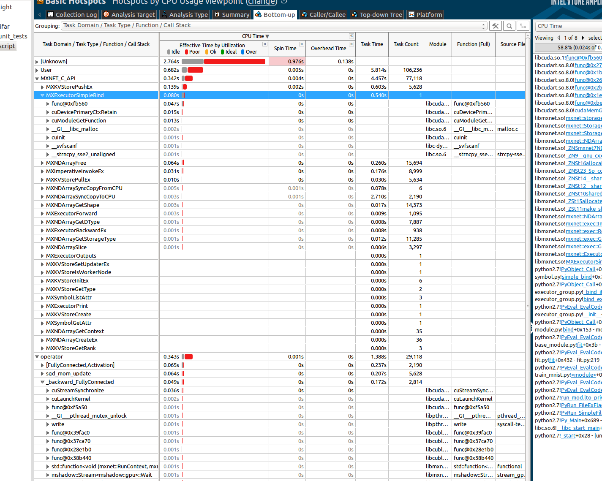
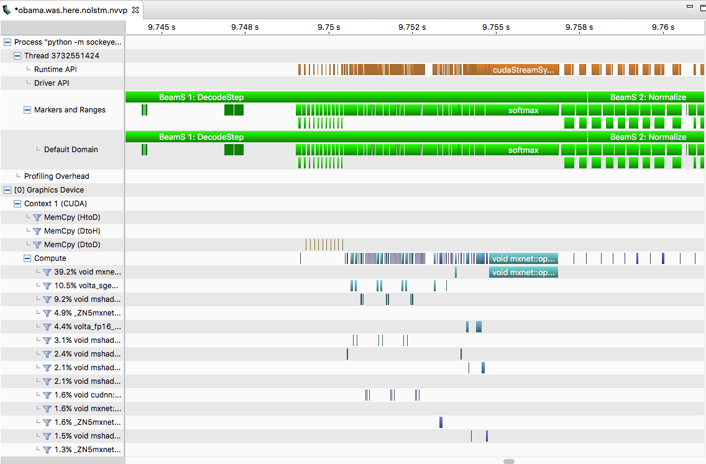
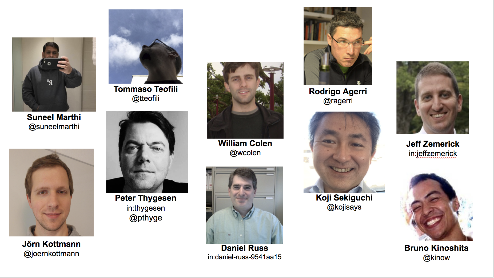

Building Streaming pipelines for Neural Machine Translation
Suneel Marthi
Kellen Sunderland
April 19, 2018
DataWorks Summit, Berlin, Germany
$WhoAreWe
Kellen Sunderland
@KellenDB
- Member of Apache Software Foundation
- Contributor to Apache MXNet (incubating), and committer on Apache Joshua (incubating)
Suneel Marthi
@suneelmarthi
- Member of Apache Software Foundation
- Committer and PMC on Apache Mahout, Apache OpenNLP, Apache Streams
Agenda
- What is Machine Translation ?
- W ?
- Why is it the bane of my existence ?
- Overview of Apache Joshua
- Dataflow Pipeline
- Demo
OSS Tools
- Apache Joshua (incubating) - A statistical machine translation decoder for phrase-based, hierarchical, and syntax-based machine translation, written in Java.
- Apache MXNet (incubating) - A flexible and efficient library for deep learning.
- Sockeye - A sequence-to-sequence framework for Neural Machine Translation based on Apache MXNet Incubating.
Why move from SMT to NMT?
- Research results were too good to ignore.
- The fluency of translations was a huge step forward compared to statistical systems.
- We knew that there would be exciting future work to be done in this area.
Why move from SMT to NMT?
The University of Edinburgh’s Neural MT Systems for WMT17 – Rico Sennrich, Alexandra Birch, Anna Currey, Ulrich Germann, Barry Haddow, Kenneth Heafield, Antonio Valerio Miceli Barone and Philip Williams.
SMT versus NMT at Scale
| Joshua | Sockeye |
|---|---|
| Reasonable Quality Translation | High Quality Translations |
| Java / C++ | Python 3 / C++ |
| Model size 60GB-120GB | Model size 256 MB |
| Complicated Training Process | Simple Training Process |
| Relatively complex implementation | 400 lines of code |
| Low translation costs | High translation costs |
SMT versus NMT at Scale
| Joshua | Sockeye |
|---|---|
| Reasonable Quality Translation | High Quality Translations |
| Java / C++ | Python 3 / C++ |
| Model size 60GB-120GB | Model size 256 MB |
| Complicated Training Process | Simple Training Process |
| Relatively complex implementation | 400 lines of code |
| Low translation costs | High translation costs |
NMT Samples
Jetzt LIVE: Abgeordnete debattieren über Zuspitzung des Syrien-Konflikts.
last but not least, Members are debating the escalation of the Syrian conflict.
Sie haben wenig Zeit, wollen aber Fett verbrennen und Muskeln aufbauen?
you have little time, but want to burn fat and build muscles?
NMT Challenges – Input*
The input into all neural network models is always a tensor (i.e. a multi-dimensional vector). How do you represent a word in a vector?
NMT Challenges – Rare Words*
The input into all neural network models is always a tensor (i.e. a multi-dimensional vector). How do you represent a word in a vector?
NMT Challenges – Jagged Tensors*
Input is often not sorted.
Jagged Tensors cont.
Jagged Tensors cont.

Jagged Tensors cont.

NMT Challenges – Cost*
- Step 1: Create great profiling tools, measurement.
- Step 2: Get specialists to optimize bottlenecks.
- Step 3: ???
- Step 4: Profit.
Sockeye Model Types
- RNN Models
- Convolutional Models
- Transformer Models
MXNet Profiling Tools
| CPU Profiler (vtune) | GPU Profiler (nvprof) |
|---|
|  |  |
Credits
